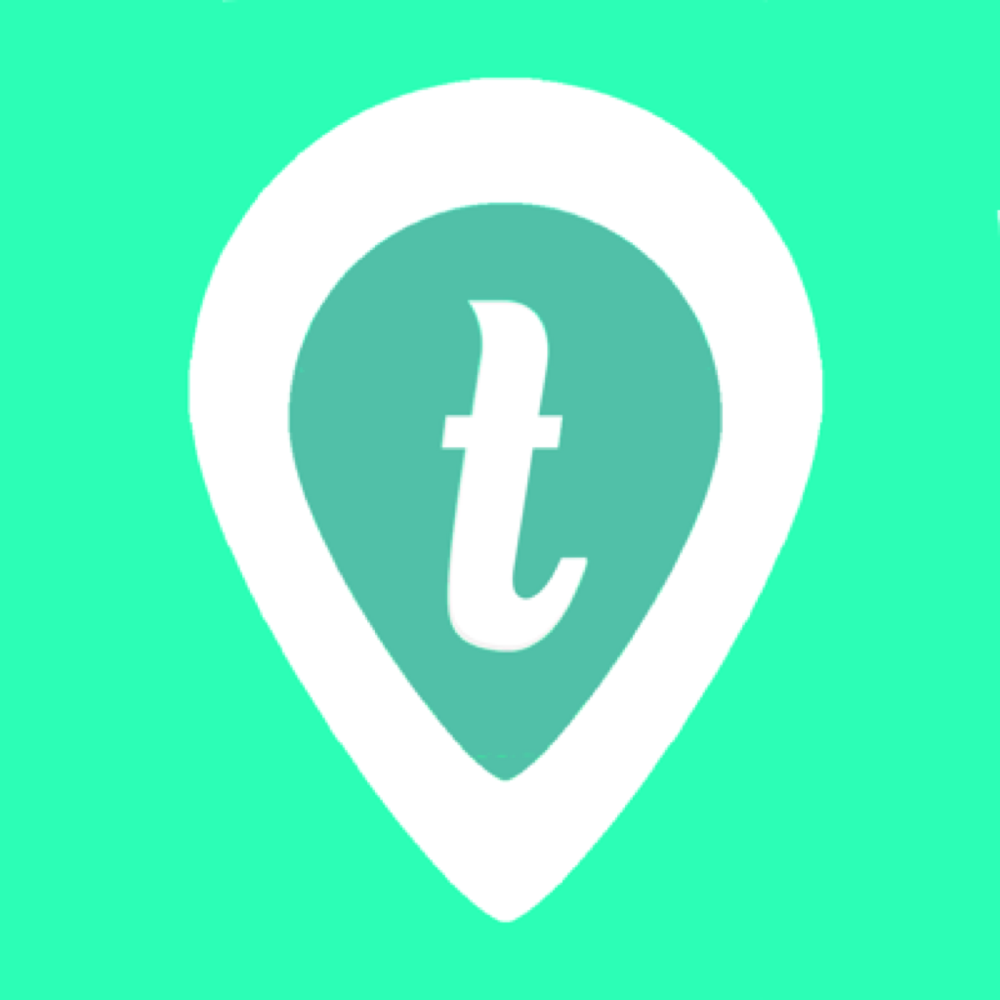

Trippie is your digital airport companion. Designed for quick interactions, Trippie quickly guides users with maps, restaurant information, flight statuses, wait times, and an exclusive digital lounge. Featured on CNBC's Shark Tank.